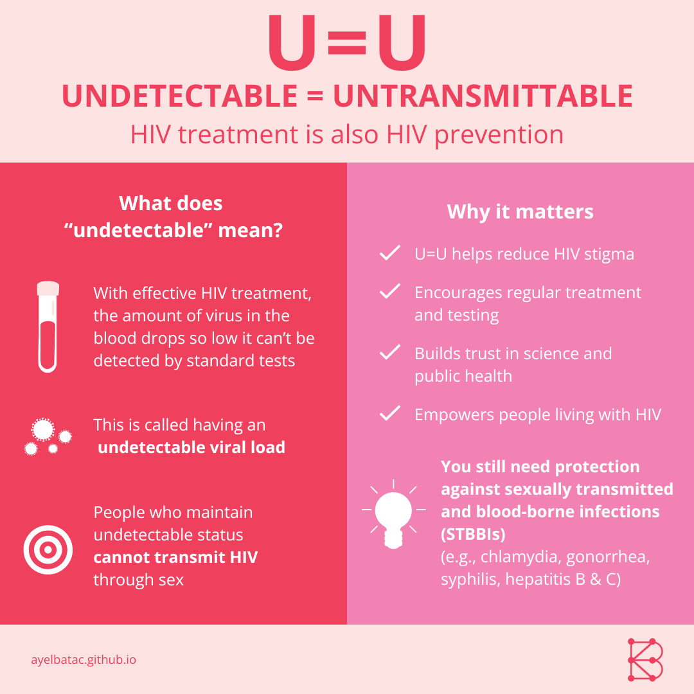

U = U: The Science Is Clear - Ayel L. R. Batac
U = U: The Science, the Message, and Why It Matters
May 23, 2025
\(~\)
What if one of the most powerful tools we have to stop HIV transmission is something most people have never even heard of?
It’s called U = U — short for Undetectable = Untransmittable — and it means that a person living with HIV who is on effective treatment and maintains an undetectable viral load cannot pass the virus to others through sex. Not “reduced risk”. Not “less likely”. Zero transmission.
This isn’t just a message of hope. It’s a message of science. And it has the power to change how we think about HIV, how we support those who live with it, and how we end stigma once and for all.
What Does U = U Actually Mean?
When someone living with HIV takes antiretroviral therapy (ART) consistently, the amount of virus in their body drops to such low levels that it becomes undetectable on standard blood tests. The virus isn’t cured — but it is controlled.
And here’s the most important part: when HIV is undetectable, it cannot be passed on sexually.
This is not a theory. It’s a fact, confirmed by some of the most significant research studies in HIV science:
🧪 HPTN 052 Study (2011)
This groundbreaking clinical trial followed over 1,700 mostly heterosexual couples across multiple continents. One partner in each couple was HIV-positive. The study compared couples where the HIV-positive partner started treatment early with those who delayed treatment.
Only one linked transmission occurred in the early treatment group, and it happened shortly after therapy began. In contrast, 27 linked transmissions occurred in the delayed treatment group. This resulted in a 96% reduction in risk — one of the first and strongest proofs that ART can prevent transmission.
🧪 PARTNER Study (2016)
This European study followed 888 couples (340 gay male and 548 heterosexual) where one partner was HIV-positive and on effective ART. Over 1,238 couple-years of follow-up, participants reported tens of thousands of condomless sex acts.
No HIV transmissions occurred between partners. Of the 11 infections observed, genetic testing confirmed all came from outside the primary relationship. The takeaway? When someone is on ART and virally suppressed, they don’t transmit HIV — even without condoms.
🧪 PARTNER2 Study (2019)
This follow-up study focused exclusively on gay male couples — a group often considered at higher risk for HIV transmission. Over 1,593 couple-years of follow-up, participants reported about 76,088 acts of condomless anal sex while the HIV-positive partner had a suppressed viral load.
Again, no HIV transmissions occurred. This study confirmed what PARTNER1 had shown and extended it to even the highest-risk types of sex: U = U holds true, even during anal sex among MSM partners.
These three landmark studies give us what is rare in public health: definitive evidence. People living with HIV who are undetectable cannot transmit the virus through sex. Full stop.
Why This Message Matters
Imagine being in a relationship, taking your medication every day, and knowing, with confidence, that you cannot transmit HIV to the person you love. That’s the kind of peace and freedom U = U makes possible.
But for too long, HIV has been surrounded by fear, misunderstanding, and silence. Many people still hold outdated ideas — that HIV can be passed through hugging, sharing food, or being near someone living with the virus. These misconceptions are not just wrong; they isolate people and fuel stigma.
U = U tells a different story. A story based in science. It reminds us that with access to treatment and care, people living with HIV can enjoy full, loving, and healthy lives. They can be intimate, have families, and move through the world without fear of harming others, because they can’t transmit the virus when undetectable.
This knowledge is not only medically important — it’s emotionally and socially liberating.
From Science to Society: Where We Stand Now
Despite the overwhelming evidence, U = U is still not widely communicated. In many parts of the world, healthcare workers may not mention it, patients may not be aware of it, and systems may not support the testing and treatment access needed to achieve undetectable status.
Stigma continues to be one of the biggest obstacles. Too many people living with HIV are still judged unfairly, discriminated against, or made to feel unsafe — even when they pose no risk to others.
This is why sharing U = U matters so deeply. It challenges fear with facts. It replaces shame with dignity. And it builds a foundation of trust — between people, partners, and health systems.
U = U and the Bigger Picture of HIV Prevention
U = U is a major breakthrough, but it’s part of a broader strategy for HIV prevention. Other essential tools include:
- Routine HIV testing
- PrEP (pre-exposure prophylaxis) for HIV-negative individuals
- Condoms and harm reduction programs
- Supportive, stigma-free care environments
When these tools work together, they help create communities where HIV is no longer something to fear, but something we know how to manage — together.
Equity and Access Still Matter
It’s important to acknowledge that not everyone has equal access to ART, viral load monitoring, or supportive healthcare. In many low- and middle-income countries, and even in marginalized communities within high-income ones — systemic barriers still limit what’s possible.
That’s why U = U must go hand-in-hand with efforts to ensure universal access to treatment, routine testing, and public education. This message is only as powerful as it is reachable.
Everyone deserves the opportunity to be undetectable — and untransmittable.
Featuring the Message: U = U in One Glance
To support the points discussed above, the following infographic provides a clear and accessible summary of what U = U means and why it matters. It’s a helpful visual to reinforce key information and support understanding:

This image highlights several core takeaways:
- What “undetectable” means: With effective HIV treatment, the virus is suppressed so low it can’t be detected by standard tests — this is called having an undetectable viral load.
- What it means for prevention: A person with an undetectable viral load cannot pass HIV through sex. This is not just reassuring — it’s scientifically proven.
Why This Changes Everything
So what does this all mean for us, right now?
This message isn’t just about reducing risk — it’s about changing lives:
- ✅ U = U reduces stigma by replacing fear with facts. When people know that those with undetectable HIV cannot transmit the virus, it chips away at the misinformation that fuels rejection and discrimination.
- ✅ It encourages treatment and testing by showing that knowing your status and accessing ART has both personal and public benefits.
- ✅ It builds trust in public health by demonstrating how scientific evidence can empower people, not just diagnose them.
- ✅ It empowers people living with HIV to live openly, form relationships, and plan families — all without fear of transmission.
But while U = U addresses HIV prevention, it’s also important to remember:
🛡️ PrEP protects only against HIV — not other STIs.
PrEP (pre-exposure prophylaxis) is a powerful tool that helps HIV-negative individuals stay HIV-negative. But it does not prevent other sexually transmitted infections. That means protection like condoms still plays a key role — especially when it comes to preventing infections like gonorrhea, chlamydia, syphilis, and hepatitis B or C.
⚠️ U = U doesn’t prevent other STBBIs.
Sexually transmitted and blood-borne infections like chlamydia, gonorrhea, syphilis, hepatitis B and C, and others can still be transmitted, even when HIV is undetectable. That’s why using condoms consistently and correctly remains essential. Condoms offer strong protection not only against HIV but also against a wide range of STIs and STBBIs.
By combining strategies like U = U, PrEP, and especially consistent condom use, individuals can build a well-rounded approach to sexual health that protects not only against HIV, but also against a wide range of other STBBIs — fostering both physical health and human dignity.
Being undetectable changes what’s possible — but a comprehensive approach to sexual health is what keeps everyone safe, healthy, and respected.
The Bottom Line
Let’s be absolutely clear:
- A person living with HIV who is on effective treatment and has an undetectable viral load cannot transmit the virus sexually.
- This truth is backed by science, supported by real-world evidence, and endorsed by leading global health organizations.
- U = U is a public health breakthrough — and a message of hope, equity, and human dignity.
The more we share this message, the more we break down stigma, build trust, and empower people — no matter their status.
Thank you for being here. Let’s keep talking.
-Ayel